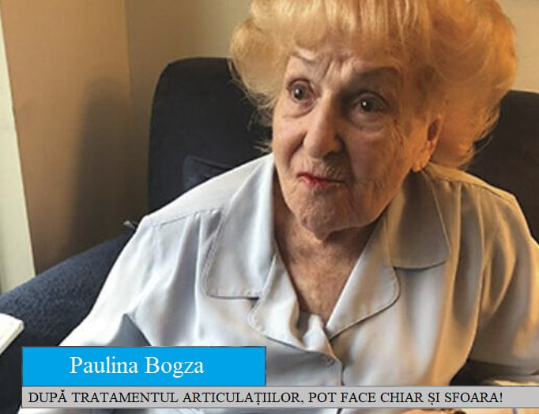
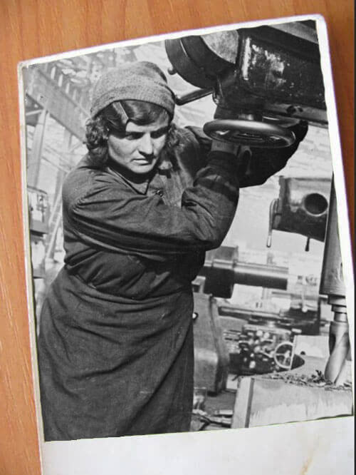

СТАВИ КАТО НА МЛАДЕЖ? СЕГА ТОВА Е РЕАЛНОСТ!
Материалът е публикуван наПавлина Върбанова: След лечението на СТАВИТЕ мога да правя дори шпагат!

Днес ще ви разкажем една интересна история за чудесата, които понякога се случват. Вярно е обаче, че зад тях често се крият най-новите постижения на науката. Нашият кореспондент интервюира 80-годишната Павлина Върбанова, която отдавна страда от остеоартрит на коленните стави. Благодарение на съвременния метод на лечение тя може да прави сплитове и да седи в поза лотос! Възрастната жена вече изглежда добре и за да подчертае своята енергия и жизненост, се съгласи да даде интервю и да покаже гъвкавост!
Павлина Върбанова е родена в София. Тя е една типична българска пенсионерка. Родена е по време на войната. След гимназията завършва медицина и работи като медицинска сестра в армията. Има няколко държавни награди. Става така, че Павлина Върбанова напуска София, премества се в Луковит и започва работа в завода за керамични тухли. Там тя се радва на всичките “удобства” на работата си: бута количките с тухли в пещта, през зимата работи с потоци студен въздух, а зад нея стои гореща пещ – получава се, че работи на минус 5 градуса от едната страна и плюс 60 градуса от другата.
Няма как армията и тежката работа да не се отразят на здравето на жената. Появяват се най-различни болести, но ставите я притесняват най-много. Работата в тежки условия (сняг, студ, влага) и тежкият труд в тухларната се отразяват на здравето ѝ.

По този начин Павлина Върбанова развива остеоартрит на коленните стави. Известно време жената се бори с болестта. Ходи по лекари (доколкото може), приема всички предписани лекарства, пие различни отвари и се маже с мехлеми. Но болестта продължава да се влошава. Всяка стъпка носи на жената ужасна болка и сълзи. На 70-годишна възраст тя се отказва да се бори и не става от леглото.
"Нямах повече сили да търпя това мъчение", признава пенсионерката. - Исках да умра.
Предлагат на бившата военнослужеща да замени ставите си с протези при преференциални условия. Но въпреки това, дори и при тези условия, разходите за подмяна на протезата надхвърлят 4 хиляди евро.
“Не разполагах с толкова много пари. Страхувах се и от самата операция. Но да си на 75 години не е шега работа. Реших да оставя всичко както си е.”, спомня си Павлина Върбанова.
И тогава се случва нещо, което Павлина Върбанова все още смята за чудо. Ненадейно разбира от съседката си, че в техния град започва работаизвестен лекар, който лесно лекуваставни заболявания -остеоартрит, артрит и т.н., че има чудодеен крем, който помага на човек в инвалидна количка за един месец да се изправи на крака. Например този лекар излекувал роднина на кмета, който в продължение на десет години е бил в инвалидна количка заради проблеми със ставите на краката.
Веднага се обадих на дъщеря си, която живее в София. Тя дойде, свърза се с този лекар и той се съгласи да ми помогне.”, спомня си Павлина Върбанова.
Тогава се случва истинско чудо. Този лекар идва при Павлина Върбанова всеки ден и маже краката ѝ с този лечебен крем. След 4 седмици тя вече успява да стане от инвалидната количка и да отиде сама на лекар. След шест седмици ставите на Павлина Върбанова са напълно излекувани от остеоартрита. Това бива потвърдено и от рентгеновите снимки.

Вляво:Рентгенография на дясното коляно на Павлина Върбанова - на 75 години. Хрущялната тъкан е почти напълно разрушена. Препоръката на лекаря е ставата да се замени с протеза.
Вдясно:Рентгенова снимка на дясното коляно на Павлина Върбанова след приема на "".
Но това не е всичко!
“Знаете ли, след лечението усетих, че краката ми са същите, както когато работех, и бях пълна с енергия! И започнах да правя упражнения, които не бях правила от 40 години. Започнах с клекове и други прости упражнения. След един месец започнах да скачам нормално, а после вече скачах и на въже.”
“Тогава реших да направя шпагат! Тренирах в продължение на един месец и успях! Нямам болки в коленете. Ставите ми са като нови! Много съм благодарна на моя лекар.”
От редакцията:
Разбрахме името на лекаря, който е лекувал Павлина. Името му е Михаил Михалев, известен доктор с тридесетгодишен практически опит. Срещнахме се с Михаил Михалев и той ни разказа за своя метод на лечение.
Михаил Михалев
Известен лекар, доктор по медицина, университетски професор. Основоположник на съвременната физиотерапия - алтернативен метод (неврология и ортопедия) за лечение на хронични заболявания и травми на опорно-двигателния апарат, отправна точка, в която се залага на вътрешните резерви на организма, без прием на лекарства и носене на бинтове на краката и.
- Д-р Михаил Михалев , разкажете ни повече за метода на лечение, който използвате.
- Става дума за крема „”. Това е крем с лечебни свойства, който позволява да забравите за болките в гърба и ставите в най-кратки срокове, само за 4 дни, и да излекувате дори много сложни случаи за няколко месеца. Произвежда се само в Сибир, а за разработването на състава му са похарчени 1,3 милиона долара.
— И как действа този чудодеен крем?
— Това не е чудо, а чиста наука. Кремът се основава на специална формула.Няма нищо по-ефективно за възстановяване на ставния хрущял.Кремът помага за премахване на болката в ставите и възстановяване на правилното им функциониране.
Дори едно намазване е достатъчно, за да се активират повече от 930 000 клетки, които участват пряко в процеса на кръвообращението. И така с всяко нанасяне. Това е основният принцип на лечението.
- Звучи впечатляващо. Просто ни обяснете какво означава това за обикновените пациенти?
— Това означава, че средновековната медицина е останала в миналото, а ставните заболявания могат да бъдат излекувани в рамките на месец или два в домашни условия. не е просто обикновено обезболяващо средство, той "презарежда" тялото на клетъчно ниво. премахва самата причина за болката и връща ставите в първоначалното им, нормално състояние. Благодарение на това средство не само изчезват симптомите, но и се премахва източника на заболяването, а именно дегенеративните промени в хрущяла на ставата.
Още от първия ден стартира регенерацията на организма. Разбира се, болката намалява, това се усеща веднага. Цялостното лечение приключва в рамките само на две-три седмици и най-важното е, че се предотвратава повторната поява на болка, както и рецидив.

1. Липса на хранене на ставите. Хрущялната тъкан е разрушена..
2. Възстановяване на хрущялната ставна тъкан след 2 седмици употреба на .
3.Възстановяване на хрущялната ставна тъкан след 3 седмици употреба на .
4. Здрава става след приключване на лечението с крем .
- Рентгенографското изображение по-долу показва типична картина на възстановяване на колянната става.

- Благодарение на "" можете да излекувате заболяванията си у дома за месец или два. не замразява и не обезболява, а "рестартира" тялото на клетъчно ниво.
- Казахте, че може да излекува остеоартрита самостоятелно за 4-6 седмици. Но откъде мога да си купя този крем?
- Щастлив съм да съобщя, че клиниките най-накрая обърна внимание на това иновативно средство на учените и осъществи програма за разпространение сред населението на "" с помощта на томбола..
Благодарение на преференциалната програма вече можете да се сдобиете с с помощта на томбола за отстъпка до 50%!
Но има едно “но”. Промоцията е валидна от до .
— Д-р Михаил Михалев , благодаря Ви за интервюто! Може би бихте желали да кажете нещо на нашите читатели?
— Да! Да, разбира се. Бих искал да насоча вниманието ви към големия брой фалшификати в нашите аптеки. Обикновено разпространени са фалшификатите сред най-популярните и търсени продукти. За съжаление, популярността на не оставя никакво съмнение, че скоро ще се появят много фалшификати и на този продукт. Вече съм срещал няколко такива, затова призовавам всички да купуват само от доверени продавачи или участвайки в томболата в рамките на клиничната програма.


![cart]()